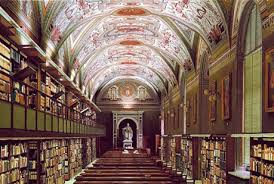

Считается, что огромнейшая библиотека Ватикана, появившаяся в XV веке, хранит в себе чуть ли не все священные знания человечества. Впрочем, большая часть книг является весьма засекреченной, а к некоторым свиткам имеет доступ лишь Папа Римский.
Официально библиотека Ватикана основана 15 июня 1475 года, после издания Папой Сикстом IV соответствующей буллы. Однако это не совсем точно отражает действительность. К этому времени у папской библиотеки уже была давняя и богатая история. В Ватикане находилась коллекция древних рукописей, которую собирали предшественники Сикста IV. Они следовали традиции, появившейся еще в IV веке при Папе Дамасе I и продолженной Папой Бонифацием VIII, который создал первый полный на то время каталог, а также настоящим основателем библиотеки Папой Николаем V, объявившим ее публичной и оставившим после себя более полутора тысяч различных рукописей. Вскоре после официального учреждения, в библиотеке Ватикана находилось уже более трех тысяч оригинальных рукописей, купленных папскими нунциями на территории Европы.
Содержание большого количества трудов увековечило для последующих поколений множество переписчиков. В тот период в коллекции находились не только теологические труды и священные книги, но и классические произведения латинской, греческой, древнееврейской, коптской, древнесирийской и арабской литератур, философские трактаты, труды по истории, юриспруденции, архитектуре, музыке и искусству.
Некоторые исследователи считают, что в Ватикане содержится и часть Александрийской библиотеки, созданной фараоном Птолемеем Сотером незадолго до начала нашей эры и пополнявшейся со вселенским размахом. Египетские чиновники забирали в библиотеку все ввозимые в страну греческие пергамента: каждый корабль, прибывший в Александрию, если на нем имелись литературные произведения, должен был или продать их библиотеке, или предоставить для копирования. Хранители библиотеки спешно переписывали все попадавшиеся под руку книги, сотни рабов ежедневно трудились, копируя и сортируя тысячи свитков. В конечном счете к началу нашей эры Александрийская библиотека насчитывала много тысяч рукописей и считалась крупнейшим книжным собранием античного мира. Здесь хранились произведения выдающихся ученых и литераторов, книги на десятках разных языков. Говорили, что в мире нет ни одного ценного литературного произведения, копии которого не было бы в Александрийской библиотеке. Сохранилось ли что-то от ее величия в Ватиканской библиотеке? Об этом история пока умалчивает.
Если же верить официальным данным, то ныне в хранилищах Ватикана находятся 70 000 рукописей, 8 000 первопечатных книг, миллион печатных изданий, более 100 000 гравюр, около 200 000 карт и документов, а также множество произведений искусства, не поддающихся поштучному учету. Ватиканская библиотека притягивает как магнит, но для того чтобы раскрыть ее тайны, нужно поработать с ее фондами, а это совсем не просто. Доступ читателей к многочисленным архивам строго ограничен. Для работы с большинством документов необходимо делать специальный запрос, объясняя причину своего интереса. А в Ватиканский секретный архив, закрытые фонды библиотеки могут попасть разве только специалиста, причем те, кого власти Ватикана сочтут достаточно благонадежными для работы с уникальными документами. Хоть официально библиотека считается открытой для научных и исследовательских работ, но ежедневно в нее могут попасть лишь 150 специалистов и ученых. С такими темпами на изучение находящихся в библиотеке сокровищ уйдет 1250 лет, ведь общая протяженность стеллажей библиотеки, состоящей из 650 отделов, составляет 85 километров.
Известны случаи, когда древние манускрипты, являющиеся, по мнению историков, достоянием всего человечества, пытались украсть. Так, в 1996 году американский профессор, историк искусства был осужден за кражу нескольких страниц, вырванных из манускрипта XIV века пера Франческо Петрарки. На сегодня доступ в библиотеку ежегодно получают около пяти тысяч ученых, но только Папа Римский обладает исключительным правом выносить книги за пределы библиотеки. Для того, чтобы получить право работать в библиотеке, нужно иметь безупречную репутацию. Да и в целом Ватиканская библиотека - один из самых охраняемых в мире объектов, ведь ее защита серьезнее, нежели у любой из атомных электростанций. Помимо многочисленных швейцарских гвардейцев, покой библиотеки охраняют ультрасовременные автоматические системы, образующие несколько уровней защиты.
Леонардо да Винчи и тайны ацтеков
Наследие, которое собирали главы римско-католической церкви, значительно пополнялось за счет приобретения, получения в дар или на хранение целых библиотек. Так в Ватикан попали издания из ряда крупнейших европейских библиотек: «урбинской», «палатинской», «гейдельбергской» и других. Кроме этого,в библиотеке находится множество архивов, которые до сих пор не изучены. Есть в ней и ценности, доступ к которым можно получить лишь теоретически. К примеру, некоторые рукописи знаменитого Леонардо да Винчи, которые до сих пор не показывают широкой публике. Почему? Есть предположение, что в них содержится нечто, способное подорвать престиж церкви.
Особая загадка библиотеки -это таинственные книги древних индейцев-тольтеков. Об этих книгах известно лишь то, что они действительно существуют. Все остальное - это слухи, легенды и гипотезы. По предположениям, в них есть сведения о пропавшем золоте инков. Также утверждается, что именно в них содержится достоверная информация о визитах инопланетян на нашу планету еще в глубокой древности.